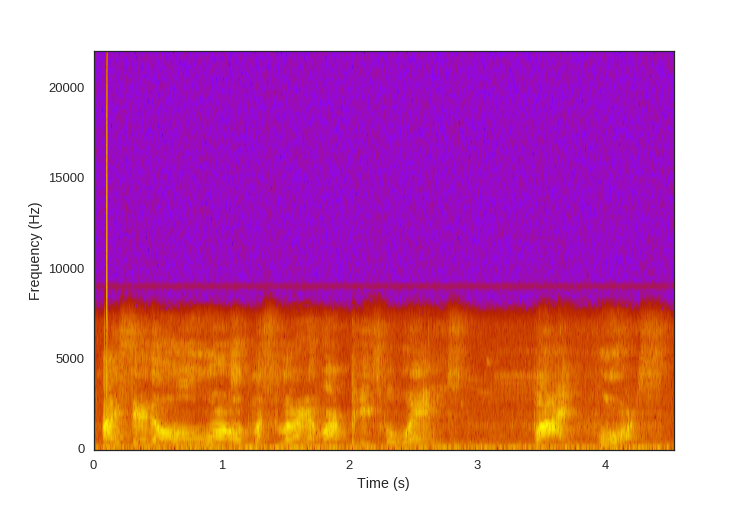
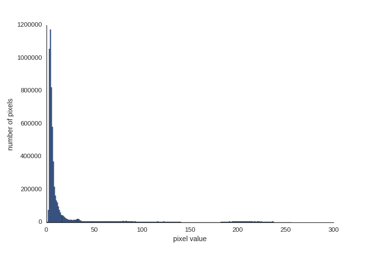
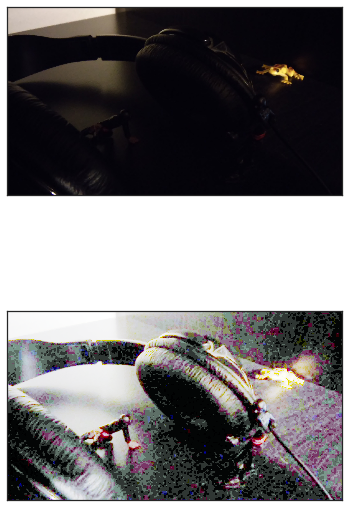
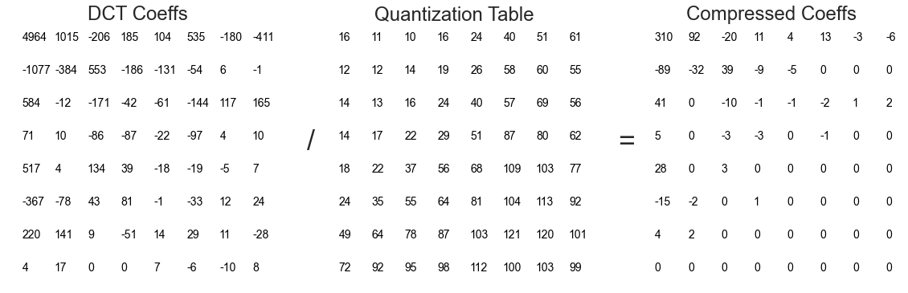

Digital Signal Processing Demystified
Amy Boyle @amylouboyle
Digital Signal Processing = DSP
- Who am I?
- What is DSP?
- Sound
- Images
- Compression
Who Am I?
- Software Engineer
- Auditory Neuroscience Research
Why am I telling you this?
- Signal "literacy"
- Give you a starting point to dive further
What is DSP?
El procesamiento digital de señales o DSP (sigla en inglés de digital signal processing) es la manipulación matemática de una señal de información para modificarla o mejorarla en algún sentido. Este está caracterizado por la representación en el dominio del tiempo discreto, en el dominio frecuencia discreta, u otro dominio discreto de señales por medio de una secuencia de números o símbolos y el procesado de esas señales.
Doing Stuff to Points
(of data)What is a Signal?
A type of physical data that conveys information.
A description of how one parameter depends on another
Sound

Light

Temperature
heart beats
hiking trail elevation

A digital signal is a signal turned into values at points in time or space

Sampling gets values at regular intervals

Quantization buckets values


All signals are just sin/cos waves
 =
=

t = np.arange(0.0, 1.0, 0.01)
signal = np.zeros_like(t)
for i in range(2, 100, 2):
signal = np.sin(i*2*t*np.pi)/i
Sound Example

Fourier Transform converts time series data into frequency information

import numpy as np
import matplotlib.pyplot as plt
fs = 44100
step_size = 1./44100
t = np.arange(0.0, 1.0, step_size)
twotone = np.sin(t*750*2*np.pi) + \
np.sin(t*1500*2*np.pi)
spectrum = np.fft.rfft(twotone)
freqs = np.fft.rfftfreq(len(twotone), 1./fs)
plt.plot(freqs, abs(spectrum))
Running the FFT on time chunks gives a spectrogram
import numpy as np
import matplotlib.pyplot as plt
fs = 44100
step_size = 1./44100
t = np.arange(0.0, 1.0, step_size)
twotone = np.sin(t*750*2*np.pi) + \
np.sin(t*1500*2*np.pi)
plt.specgram(twotone, Fs=fs, NFFT=512,
noverlap=0, cmap='gnuplot')

Speech is more complex

from scipy.io import wavfile
from scipy import signal
fs, audio = wavfile.read('audio/distorted.wav')
passband = 10000. #Hz
stopband= 11000.
nyq = 0.5 * fs
order, normalized_cutoff = signal.buttord(passband/nyq, stopband/nyq, 3, 40)
b, a = signal.butter(order, normalized_cutoff, btype='low')
low_passed = np.zeros_like(audio)
low_passed[:,0] = signal.lfilter(b, a, audio[:,0])
low_passed[:,1] = signal.lfilter(b, a, audio[:,1])
wavfile.write('filtered.wav', fs, low_passed)
Filtered
Before
After

Inadequate sampling rate can cause aliasing
fs = 500
step_size = 1./fs
t = np.arange(0.0, 1.0, step_size)
freq0 = 120
freq1 = 110
twotone = np.sin(t*freq0*2*np.pi) + \
np.sin(t*freq1*2*np.pi)
spectrum = np.fft.rfft(twotone)
freqs = np.fft.rfftfreq(len(twotone), 1./fs)
ax, fig = plot(freqs, abs(spectrum), '
Frequency (Hz)', 'Amplitude')

Inadequate sampling rate can cause aliasing
fs = 50
step_size = 1./fs
t = np.arange(0.0, 1.0, step_size)
freq0 = 120
freq1 = 110
twotone = np.sin(t*freq0*2*np.pi) + \
np.sin(t*freq1*2*np.pi)
spectrum = np.fft.rfft(twotone)
freqs = np.fft.rfftfreq(len(twotone), 1./fs)
ax, fig = plot(freqs, abs(spectrum), '
Frequency (Hz)', 'Amplitude')
An Image is a 2D signal in the spatial domain
| 46 | 34 | 77 | 96 | 97 |
|---|---|---|---|---|
| 0 | 0 | 44 | 92 | 112 |
| 0 | 0 | 52 | 77 | 92 |
| 0 | 0 | 60 | 71 | 75 |
| 24 | 43 | 61 | 66 | 63 |
Brightness shifts pixel values up or down

Brightness shifts pixel values up or down
image = plt.imread('img/ptown.jpg')
imshape = image.shape
flat_image = image.flatten()
# increase brightness
brighter = np.arange(256)
brighter += 100
brighter[brighter>255] = 255
bright_adjusted = brighter[flat_image]
bright_adjusted = bright_adjusted.reshape(*imshape)
# decrease brightness
darker = np.arange(256)
darker -= 100
darker[darker < 0] = 0
bright_adjusted = darker[flat_image]
bright_adjusted = bright_adjusted.reshape(*imshape)
Contrast stretches pixel values

Contrast stretches pixel values
def adjust_contrast(image, factor, brightness):
contrast_map = np.arange(256)
contrast_map = (contrast_map * factor) - (brightness * (factor - 1))
contrast_map[contrast_map > 255] = 255
contrast_map[contrast_map < 0] = 0
return contrast_map[image], contrast_map
adjusted_image, contrast_map = adjust_contrast(flat_image, factor=3, brightness=128)
adjusted_image, contrast_map = adjust_contrast(flat_image, factor=1./3, brightness=128)
Histogram equalization stretches & shifts pixel values according to concentration
Histogram Equalization

bin_counts, bin_numbers = np.histogram(flat_image, bins=256, range=(0,256))
Histogram Equalization
bin_counts, bin_numbers = np.histogram(flat_image, bins=256, range=(0,256))
npx = len(flat_image)
histo_map = (np.cumsum(bin_counts)/float(npx))*256

import numpy as np
import matplotlib.pyplot as plt
image = plt.imread('img/ninja_bw.jpg')
imshape = ninja_bw.shape
flat_image = ninja_bw.flatten()
bin_counts, bin_numbers = np.histogram(flat_image, bins=256,
range=(0,256))
npx = len(flat_image)
histo_map = (np.cumsum(bin_counts)/float(npx))*256
contrast_adjusted = histo_map[flat_image]
contrast_adjusted = contrast_adjusted.reshape(*imshape)
plt.imshow(contrast_adjusted, cmap=plt.cm.Greys_r)
COLOR!
from PIL import Image, ImageOps
import matplotlib.pyplot as plt
fig = plt.figure(figsize=(6,12))
image = Image.open("img/foggy_headshot.jpg")
plt.subplot(2,1,1)
plt.imshow(image)
equalized = ImageOps.equalize(image)
plt.subplot(2,1,2)
plt.imshow(equalized)

Compression with JPEG
Joint Photographic Experts GroupJPEG Compression Steps
- Convert RGB to YCbCr
- Downsample
- DCT
- Quantize
- Encode
Convert RBG to YCbCr

from PIL import Image
pimage = Image.open(image_file)
ycbcr = pimage.convert('YCbCr')
image_array = np.array(ycbcr)
Downsample
Assign say 4 chroma pixels for each luminanceDivide image into 8x8 chunks
for row in range(0, ylen, 8):
for col in range(0, xlen, 8):
chunk = image_array[row:row+8, col:col+8, 0]
...

Shift pixel values to be about 0
Discrete Cosine Transform (DCT)


from scipy.fftpack import dct
dct_coefficents = dct(dct(shifted_grid, axis=0), axis=1)
print dct_coefficents.astype(int)
Quantization


Apply Huffman/run-length encoding


- Doing Stuff to Points
- Signals are composed of sine waves
- Adequate sampling rate is important
- Understand the underlying process
Presentation on amyboyle.ninja
Source at github.com/boylea/dsp-talk
@amylouboyle